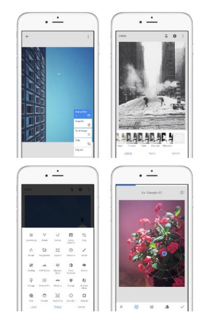
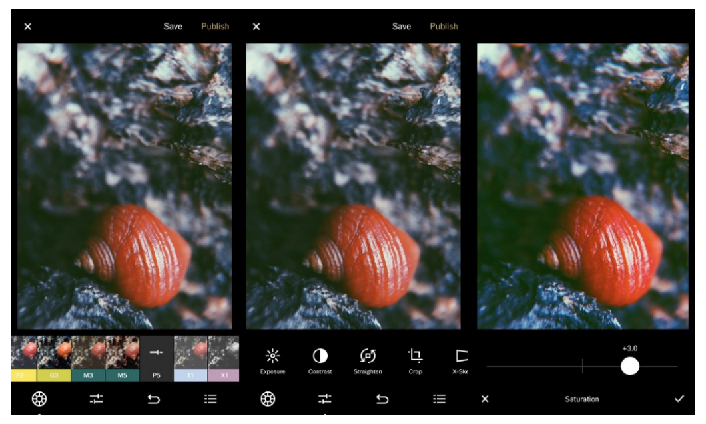
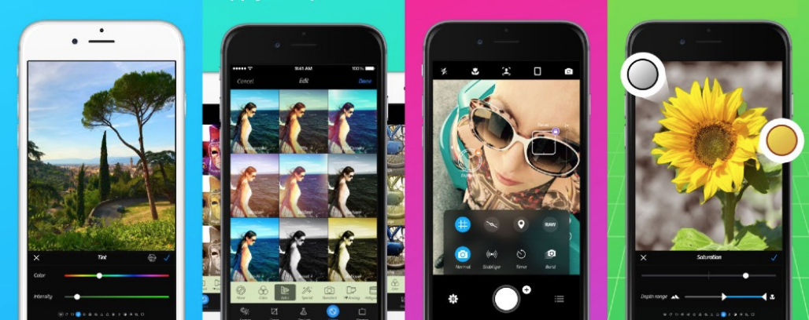
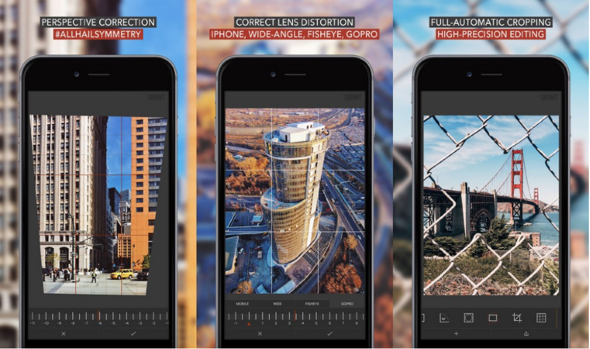
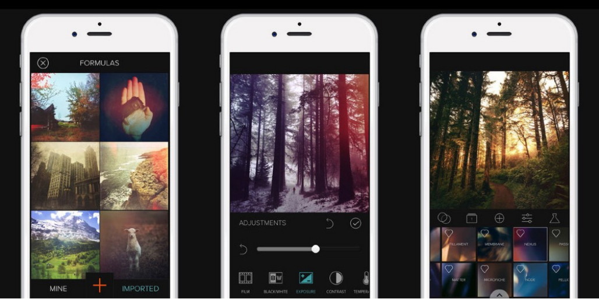
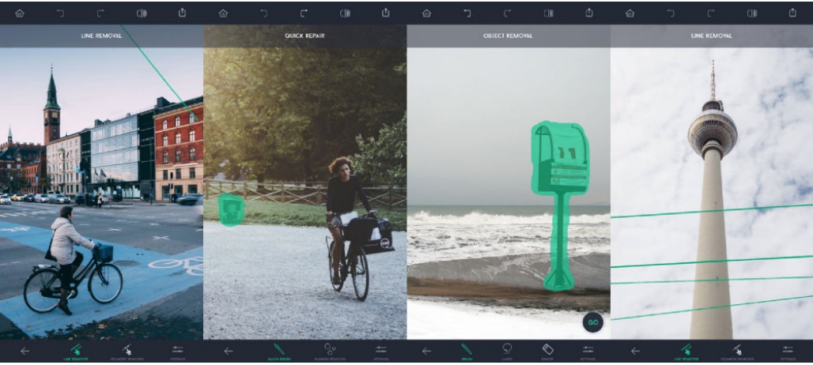

Snapseed
If I could only have one photo app on my iPhone, I would probably go for Snapseed. It’s the app that I have used for editing more photos than any other photo app, and often it’s all I need for post-processing. Many talented iPhoneographers have also praised Snapseed in our interviews. And if you’re only getting started with iPhoneography, it’s the one photo editing app that you should learn before everything else.
VSCO
VSCO is a great camera replacement and photo editing app. Its greatest strength lies in simple one-tap editing presets that can be used to add a unique classic-photography look and feel to your photos. Most one-tap editing apps have terrible filters that will only ruin your photos, but VSCO effects are a lot more subtle, and they almost always look great.
VSCO also offers some really great custom editing options, such as the ability to add tint to the highlights or the shadows of the photo separately. If you’re looking for an app that can easily add a classic photography look to your photos, you can’t go wrong with VSCO.
Camera+
I tried many camera replacement apps until I finally settled on Camera+. Of course, there are other apps with similar functionality (e.g. ISO and shutter speed control, manual focus, image stabilization, etc.), but none of them are as elegant and intuitive as Camera+ is today.
Besides excellent camera controls, Camera+ also comes with powerful photo editing tools - including one-touch scene modes, extensive advanced tools in the ‘Lab’, filters and frames. This makes it a great addition to the other photo editing apps mentioned in this report
Pro HDR X

HDR or High Dynamic Range is a photography technique that combines differently exposed versions of the same photo into one composite image so that both the highlights and the shadows are properly exposed. You can take HDR photos with the iPhone’s built-in camera app, but if you want a stronger HDR effect, you should definitely check out Pro HDR X.
Pro HDR X helps you take powerful and natural-looking HDR photos with your iPhone while keeping the detail in both shadows and highlights. One downside of HDR apps such as Pro HDR X is that it takes longer to capture HDR photos, so you don’t want to have any movement in the frame while the photo is taken.
SKRWT
How often have you taken a photo and, once you got home, wished you could straighten up those wonky buildings? Or wanted to fix the lens distortion that can be seen in some photos? Not many apps offer solutions for these problems and those that do often don’t do it well. Thankfully SKRWT makes it simple and does it really well - even autocropping the photo to save you time.
In addition it gives you easy access to EXIF information about your images, provides fine rotation control, advanced cropping and can save your images in superior RAW mode.
Mextures
There are many apps that you can use to apply textures, scratches and light-leaks to your photos, but none of them are as good as Mextures. With a simple user interface, the ability to stack a seemingly infinite number of layers, interesting blending modes and a large collection of high-quality textures, Mextures really is the best app for applying textures and other similar effects to your iPhone photos.
Another really cool thing about Mextures is the ability to quickly edit photos using formulas. You can either use one of the formulas that has been created for you by professional photographers, or you can create your own formula to quickly apply the same adjustments to multiple photos.
TouchRetouch
Have you ever taken a great photo and then noticed a mark or blemish that ruins the image? Or maybe you simply want to erase one or more objects that don’t work within the composition. TouchRetouch is a simple yet powerful app that lets you quickly remove unwanted objects from your iPhone photos.
Simply brush over the areas you want to remove so that they’re highlighted in red, then tap the Start button. Selected objects will be replaced by pixels from the surrounding area, therefore this app works best when the object you want to remove is surrounded by simple detail such as sky, grass, water, etc.